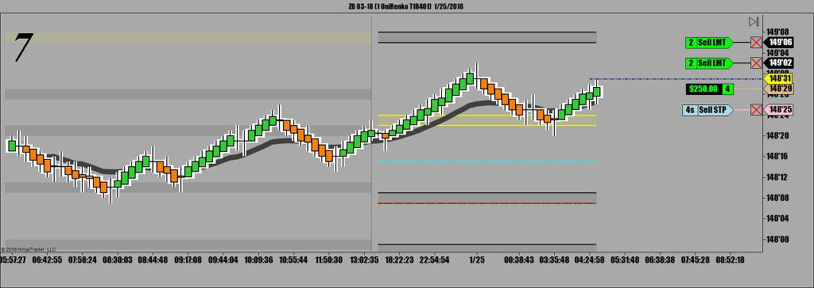
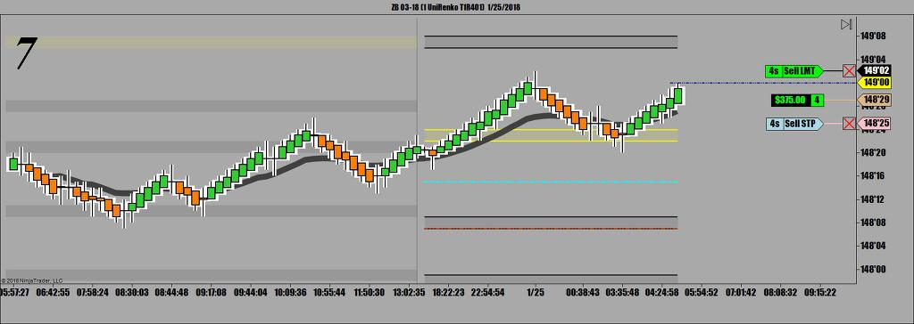

오늘 목요일은 아침 7시에 기존주택판매지표 하나 있었고 그외에는 큰 재료가 없는 날
기관들의 증시 띄우기가 거의 정점에 다다른 느낌
조만간 떡락이 찾아올것임을 느끼고 있음
그때가서 국채도 크게 한번 땡길 수 있는 기회가 올것임
오늘의 국채는 일단 바닥 다지기에 들어간 느낌
줄기차게 하락하다가 바닥을 만들고 Basin을 조성하는 모양새
하지만 언제라도 다시 추가하락 가능성이 있는 만큼
큰 물량을 매매하는것 금지. 일단 횡보장으로 대응
오늘 첫매매
가볍게 4 Lot으로 진입



하락하다가 반등에 성공해 이평선을 뚫은후 확실히 지지받은 후 재반등하는 눌림목 공략. 가볍게 승리 !!
두번째 매매
일차상승으로 신고가 만들고 오늘의 피봇까지 밀렸다가 재반등을 시도했는데 고점돌파 실패하고 쌍봉을 만들고 하락
지지선이 무너지면서 하향돌파. 지지선 돌파하고 곧 눌림목의 대명사 쌍십자가 출현
선물매매상 가장 확률이 높은 패턴이 나왔기에 물량 잔뜩 실어서 매도진입.
 1_25_2018.jpg)
 1_25_20181.jpg)
 1_25_20183.jpg)
그 후에 세번째 네번째 매매 모두 눌림목과 쌍바닥을 공략해 오늘 4번 매매에 4번 모두 승리
 1_25_2018.jpg)
오늘 매매
3번 눌림목 공략
1번 쌍바닥 공략
4전 4승
오늘 총수입은 2만2천115불